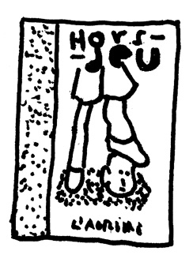
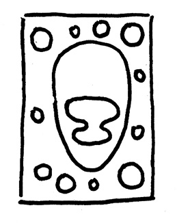
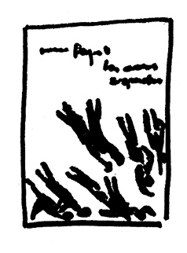
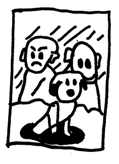
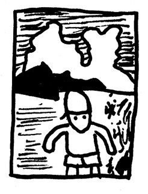

Guillaume Dégé – sélection
Artiste, dessinateur, auteur de plusieurs ouvrages. Représenté par la galerie Sémiose.
A étudié le chinois avant de se lancer dans le dessin.
Co-créateur de la maison d’édition Les 4 Mers avec Tom de Pékin.
Enseignant à l’Ensad, Paris, professeur invité aux Beaux-arts de Xi’an.
J’ai favorisé des livres édités par des maisons d’éditions, indépendantes ou de cavalerie moyenne, afin qu’ils soient facilement accessibles à des lecteurs ou bibliothèques. Si je connais une partie des éditeurs qui les ont publiés, mon choix évidemment porte sur les auteurs et la qualité de leurs œuvres. Je l’ai motivé par la surprise et le plaisir que j’ai eu à lire ces livres.
Hors jeu, Matthieu Chiara, L’agrume, 2016
Matthieu Chiara a gardé de ses premières études un goût particulier pour la dissection, il travaille le corps social, ici, le football. Avec une précision méticuleuse, voire presque une forme de sadisme.
Qasar contre Pulsar, Alexis Beauclair, Etienne Chaize, Mathieu Lefèvre, éditions 2024, 2013
C’est un trouple éblouissant ! Chacun à sa place, scénario (Lefèvre) dessin (Beauclair) couleur (Chaize) dans une histoire gigogne de science-fiction aux emboîtements multiples. Le lecteur est emporté dans un voyage spatiotemporel singulièrement piégé.
Les amours suspendues, Marion Fayolle, magnani, 2017
Pourquoi se priver d’un livre de Marion Fayolle ? Parce que c’est un succès ? Comme les truffes ou le fois gras ? Je ne suis pas un lecteur de Carême. Une comédie musicale en forme de bande dessinée, montée en finesse, jouant sur des rythmes différents.
Papayou, Matthias Aregui, Thierry Magnier, 2018
Matthias Aregui fait des livres pour l’enfant qu’il est resté. Ainsi peut-être résout-il, ou montre-t-il des accidents douloureux et incontournables. Il le fait cependant sans lourdeur et avec une dose de tristesse et d’imagination qui transforme le lecteur en témoin empathique.
Histoires de France, Nayel Zeaiter, La martinière jeunesse, 2018
Nayel Zeaiter est un éléphant camouflé dans un magasin de porcelaine. Ses histoires de France massives pourraient presque passer inaperçues pour l’amateur inattentif. Elles sont byzantinement farcies à l’incongruité, l’endroit même que le fameux « roman national » fait mine d’ignorer.
Benoit de Coco, Eugène Riousse, Magnani, 2018
Ou comment un vague calembour déchaîne un surnaturel contemporain. Une étrange aventure, approximativement exotique servie par une rare qualité graphique qui se déploie dans de grandes pages très tenues.